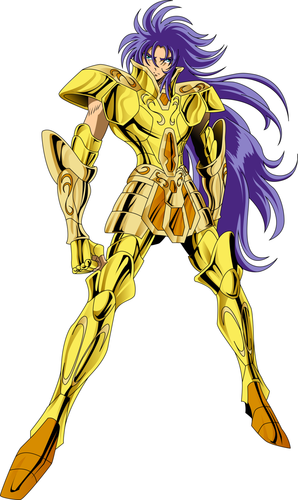

Saga de Gêmeos
Um dos mais poderosos e complexos Cavaleiros de Ouro, Saga de Gêmeos é definido por uma dualidade que o divide entre a bondade e a maldade absoluta. Guardião da terceira casa, seu cosmo divino lhe permite usar técnicas como a Explosão Galáctica e a Outra Dimensão. Sua habilidade de manipulação mental, o Satã Imperial, foi crucial para seus planos após assassinar o Grande Mestre Shion e usurpar seu posto por treze anos. Durante sua tirania, tentou assassinar a infante Atena e manipulou o Santuário para dominar a Terra. Seu fim é trágico e redentor: ao final da Batalha das Doze Casas, livre de sua face maligna pelo Escudo de Atena, ele retoma a lucidez e, consumido pelo remorso, tira a própria vida diante de Saori Kido, buscando a expiação através do sacrifício.
